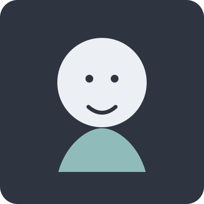

Bio
Sou Daniel Sievert, criador audiovisual com foco em storytelling visual, campanhas e conteúdo para redes sociais.
Trabalho com direção, captação e edição para transformar ideias em peças impactantes, com estética forte e linguagem clara.
Minha rotina combina criatividade, estratégia e sensibilidade para entregar trabalhos que conectam marcas e pessoas.